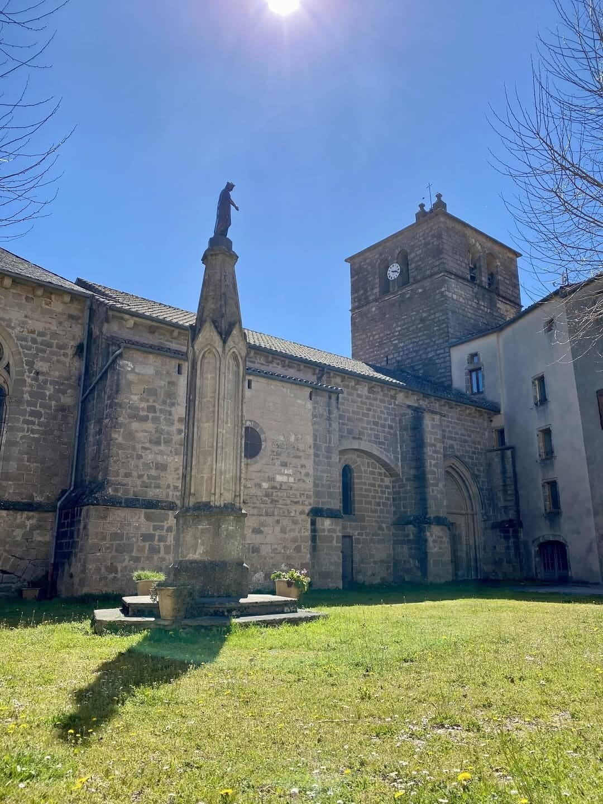

Des Templiers de Rocozels à l'église fortifiée Saint-Jean-Baptiste, du château de Bouloc aux dolmens de basalte : huit siècles d'histoire gravés dans la pierre.
Mentionné dès 1135 dans une bulle du pape Innocent II parmi les possessions de l'abbaye bénédictine de Joncels, Ceilhes fut au Moyen Âge une petite ville prospère, renommée pour ses foires aux bestiaux qui perdurèrent jusqu'au XXe siècle.
La puissante famille de Rocozels y laissa une empreinte profonde — deux évêques, un château, et jusqu'au duché-pairie de Fleury — tandis que les Templiers marquaient le territoire de leurs chapelles. Huit siècles d'histoire gravés dans la pierre.
La chapelle du château de Rocozels est donnée aux Templiers par Bernard IV de Gaucelin, évêque de Béziers, qui l'érigent en paroisse : l'église romane Saint-Jacques, porche du XIIe siècle.
La famille féodale donne deux évêques : Guillaume IV de Rocozels (Béziers, 1198–1205) et Raymond III d'Astolphe de Rocozels (Lodève, 1263–1280). Le château de Bouloc est bâti dans la plaine.
Remarquable mélange d'art roman et gothique, l'église fortifiée de Ceilhes est l'une des plus imposantes de la région.
L'église de Rocozels est remaniée : la date est gravée au-dessus de la porte, avec le blason aux armes de la famille Rocozels. Elle est aujourd'hui classée Monument historique.
Les seigneurs de Rocozels connaissent une grande destinée avec la création du duché-pairie de Fleury.
Les célèbres foires aux bestiaux de Ceilhes, qui firent la prospérité du bourg, perdurent jusqu'au XXe siècle.
Difficile de l'imaginer aujourd'hui : Ceilhes fut longtemps une petite ville affairée.
Ses foires aux bestiaux, réputées dans tout le pays, drainaient les éleveurs des Monts d'Orb et du Larzac. Sous terre, des mines exploitées depuis l'Antiquité firent vivre des générations entières, jusqu'à leur fermeture vers 1959 — certains sites disparaissant ensuite sous les eaux du barrage d'Avène.
Et sur la place, quel grouillement ! Le bourg comptait deux boucheries, un primeur, trois épiceries, une pharmacie, sans oublier sa maison de retraite… Un village qui vivait de ses commerces, de ses métiers et de ses voisins.
Les foires se sont tues, les mines ont fermé, les boutiques se sont éteintes une à une. Mais la place, elle, continue de battre — et c'est tout le sens d'y faire vivre, encore aujourd'hui, un commerce de village.
Église fortifiée des XIIe–XIVe siècles (43,6 m de long), mentionnée dès 1135. À la fin du XIVe, ses contreforts servirent d'appui à des mâchicoulis défensifs. Inscrite Monument historique, elle conserve deux chapiteaux de la chapelle wisigothique de Notre-Dame-des-Ubertes, jadis aux Templiers.
Église romane donnée aux Templiers en 1181 par l'évêque de Béziers, remaniée en 1709. Classée Monument historique, elle porte au-dessus de sa porte le blason des seigneurs de Rocozels.
Neuf siècles d'histoire (1025–1964). Bâti dans la plaine, refuge des seigneurs de Rocozels, il fut démonté en 1964 lors de la mise en eau du barrage d'Avène, qui noya la plaine. Les piliers de son portail du XVIIIe siècle ornent aujourd'hui le parc zoologique de Lunaret à Montpellier ; nombre de ses pierres furent réemployées alentour.
Treize dolmens et un menhir, bâtis en basalte sur le plateau volcanique voisin : la mémoire des tout premiers habitants du pays.
Notice de l'église Saint-Jean-Baptiste sur la base Mérimée (Monuments historiques) et sur Wikipédia. Visites guidées du village et du musée en été — voir l'agenda.